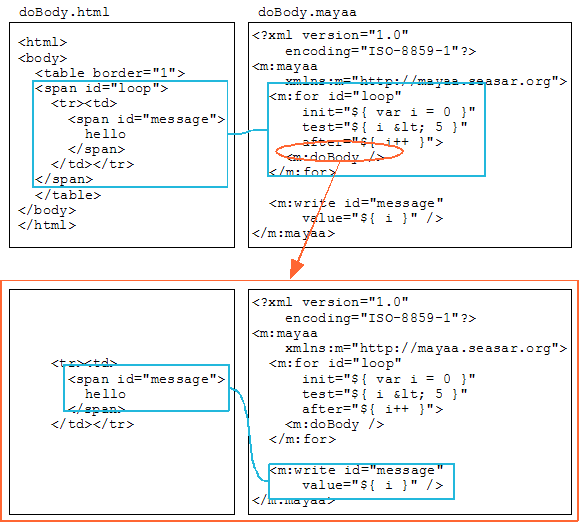

2-3. テンプレートを活かすループ
ループする部分のテンプレートを活かしたサンプルを作ってみましょう。「インストールしよう」で動作させた C:\tomcat\webapps\mayaa の下に新しくファイルを追加します。
テーブルを作る
HTML の TABLE を作り、行のみを繰り返して出力します。まず、テンプレートをそのまま出力してみましょう。id で関連付けられたタグのボディを処理するには、m:doBody を使います。
doBody.html<html> <body> <table border="1"> <span id="loop"> <tr><td>hello</td></tr> </span> </table> </body> </html>doBody.mayaa<?xml version="1.0" encoding="ISO-8859-1"?> <m:mayaa xmlns:m="http://mayaa.seasar.org"> <m:for id="loop" init="${ var i = 0 }" test="${ i < 5 }" after="${ i++ }"> <m:doBody /> </m:for> </m:mayaa>
mayaa ファイルの m:for と関連付いているのは span タグです。span タグのボディである tr, td タグおよびその内容が、テンプレートの状態のまま繰り返し出力されます。
ブラウザで http://localhost:8080/mayaa/doBody.html にアクセスしてみましょう。
実行結果<html> <body> <table border="1"> <tr><td>hello</td></tr> <tr><td>hello</td></tr> <tr><td>hello</td></tr> <tr><td>hello</td></tr> <tr><td>hello</td></tr> </table> </body></html>
動的な出力を繰り返す
次に、td タグの中身を動的な値に変更してみましょう。
doBody.html<html> <body> <table border="1"> <span id="loop"> <tr><td><span id="message">hello</span></td></tr> </span> </table> </body> </html>doBody.mayaa<?xml version="1.0" encoding="ISO-8859-1"?> <m:mayaa xmlns:m="http://mayaa.seasar.org"> <m:for id="loop" init="${ var i = 0 }" test="${ i < 5 }" after="${ i++ }"> <m:doBody /> </m:for> <m:write id="message" value="${ i }" /> </m:mayaa>実行結果<html> <body> <table border="1"> <tr><td>0</td></tr> <tr><td>1</td></tr> <tr><td>2</td></tr> <tr><td>3</td></tr> <tr><td>4</td></tr> </table> </body></html>
ループするとき、m:doBody を実行するタイミングで span タグのボディのみを mayaa ファイル全体と対応させて出力を行います。

「条件分岐とループ」で「初期化部
」と説明しましたが、このサンプルでは init で宣言した変数 i は、m:for の範囲内で有効ですm:for の外にある m:write で変数 i を使えています。
これは現在処理している位置が m:doBody の位置にあるものとして処理されるためです。m:doBody は m:for のボディにありますので、ループ変数 i を利用できます。
span を使わずに実現する
制御のために span タグを埋め込みたくない場合もあるでしょう。replace="false" を設定すれば、span タグを使わずに同じことを実現できます。
繰り返すのは tr タグとその内側なので、m:for と関連付けるのは tr タグです。変数 i を出力するのは td タグの内側なので、m:write と関連付けるのは td タグです。
doBody.html<html> <body> <table border="1"> <tr id="loop"><td id="message">hello</td></tr> </table> </body> </html>doBody.mayaa<?xml version="1.0" encoding="ISO-8859-1"?> <m:mayaa xmlns:m="http://mayaa.seasar.org"> <m:for id="loop" replace="false" init="${ var i = 0 }" test="${ i < 5 }" after="${ i++ }"> <m:doBody /> </m:for> <m:write id="message" value="${ i }" replace="false" /> </m:mayaa>実行結果<html> <body> <table border="1"> <tr id="loop"><td id="message">0</td></tr> <tr id="loop"><td id="message">1</td></tr> <tr id="loop"><td id="message">2</td></tr> <tr id="loop"><td id="message">3</td></tr> <tr id="loop"><td id="message">4</td></tr> </table> </body></html>
ただしこの方法では同じ id を持つタグが複数できてしまうため、生成される HTML は綺麗なものとはいえません。これが問題になるようであれば、span タグを使う方法を使ってください。